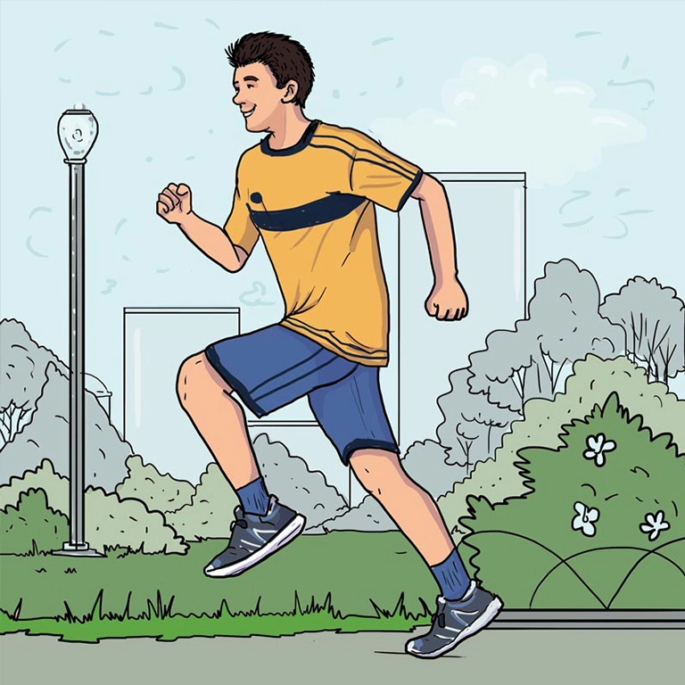

Estilo de vida saludable
Un estilo de vida saludable es una forma de vivir que ayuda a reducir el riesgo de enfermedades graves y de morir antes de tiempo (World Health Organization, 2014). Aunque no todas las enfermedades pueden evitarse, muchas muertes, como las causadas por problemas del corazón o cáncer de pulmón, sí pueden prevenirse. La salud no solo es no enfermarse, sino también sentirse bien física, mental y socialmente.
Lo que realizas día con día suma a tu estilo de vida saludable, el equipo de investigación de estilo de vida como medicina de la Universidad de Stanford reconoce los siguientes siete pilares de un estilo de vida saludable. (Stanford University, 2026)

Movimiento y ejercicio
La evidencia científica disponible señala de manera consistente que la actividad física es un elemento esencial para mantener un estilo de vida saludable. Su práctica habitual puede generar beneficios para la salud en personas de todas las edades y condiciones, sin importar su género, origen étnico o presencia de alguna discapacidad. En este sentido, incorporar actividad física de forma regular constituye una estrategia eficaz para promover la salud y contribuir al bienestar integral.
Nutrición saludable
La investigación en el campo de la ciencia de la nutrición ha identificado una amplia variedad de patrones y prácticas alimentarias que pueden contribuir a mejorar la salud. Sin embargo, la diversidad de opciones disponibles puede resultar confusa, especialmente ante la gran cantidad de recomendaciones contradictorias difundidas por las tendencias actuales relacionadas con la alimentación y el bienestar. Como consecuencia, muchas personas deben enfrentarse a la compleja tarea de seleccionar, entre numerosas recomendaciones, aquellas prácticas que pueden incorporar de manera sostenible a su alimentación cotidiana.
Sueño reparador
Los National Institutes of Health (NIH) describen el sueño como un componente fundamental de la vida cotidiana, ya que desempeña un papel esencial en nuestra capacidad para funcionar adecuadamente. Aunque tradicionalmente la salud del sueño se ha abordado principalmente desde la perspectiva de los trastornos relacionados con el sueño, actualmente existe un reconocimiento creciente de que dormir lo suficiente constituye un comportamiento clave para mantener un estilo de vida saludable.
Manejo del estrés
l estrés es la respuesta del organismo ante situaciones que percibimos como exigentes o desafiantes, desde las responsabilidades cotidianas hasta acontecimientos inesperados de mayor intensidad. Los factores estresantes del entorno pueden desencadenar una serie de respuestas internas que permiten al cuerpo adaptarse y reaccionar ante estas situaciones. Esta respuesta fisiológica, comúnmente conocida como “lucha o huida”, implica la interacción coordinada de diferentes sistemas del organismo. El estrés de corta duración puede ser útil en determinadas circunstancias, ya que favorece la concentración y el desempeño ante situaciones que requieren una respuesta inmediata. Sin embargo, cuando se mantiene durante periodos prolongados sin una adecuada recuperación, puede alterar el equilibrio del organismo y afectar el bienestar físico y emocional.
Algunas manifestaciones que pueden indicar una sobrecarga de estrés incluyen:
- Fatiga o cansancio.
- Dolor de cabeza.
- Dificultad para concentrarse.
- Problemas para tomar decisiones.
- Dificultad para controlar el enojo.
- Mayor consumo de alcohol, cafeína, tabaco u otras sustancias.
- Aumento o disminución del apetito.
- Sensación de estar abrumado.
- Pensamientos recurrentes sobre las tareas o responsabilidades pendientes.
Mejora cognitiva
A lo largo de la vida, el cerebro se encuentra en constante cambio y adaptación. Con el paso del tiempo y a partir de las experiencias y aprendizajes que adquirimos, continúan desarrollándose nuevas neuronas y sinapsis, que son las conexiones que permiten transmitir información entre las células nerviosas y diferentes regiones del cerebro. Las actividades y experiencias en las que participamos pueden influir en el desarrollo y fortalecimiento de estas conexiones, favoreciendo la estimulación y el funcionamiento cognitivo. De acuerdo con el Global Council on Brain Health, mantener una participación activa en actividades variadas, estimulantes y significativas puede contribuir a mejorar diferentes funciones cerebrales y favorecer la salud cognitiva a lo largo de la vida.
Conexión social
Por naturaleza, los seres humanos somos seres sociales y la necesidad de establecer vínculos con otras personas forma parte de nuestro funcionamiento biológico y psicológico. La interacción social favorece procesos como la comprensión, la empatía y la capacidad de relacionarnos con los demás. El contacto con familiares, amistades, integrantes de la comunidad e incluso personas desconocidas puede contribuir a generar una sensación de conexión, pertenencia y apoyo. Además, establecer vínculos sociales no solo beneficia a quien recibe apoyo, sino que también puede favorecer el bienestar de quienes participan en estas relaciones. Compartir experiencias y preocuparse por el bienestar de otras personas puede contribuir a generar una mayor sensación de satisfacción y felicidad.
La conexión social constituye, por tanto, un componente importante de la salud física y del bienestar mental y emocional. Sin embargo, tener un gran número de relaciones no necesariamente implica sentirse acompañado o pertenecer a una comunidad. Por ello, la calidad de los vínculos puede ser más importante que la cantidad de relaciones. Las interacciones sociales significativas pueden incluir diferentes formas de apoyo, como:
- Ayuda práctica o concreta.
- Apoyo emocional.
- Escuchar y ofrecer diferentes perspectivas.
- Orientación o consejos.
- Reconocimiento y validación de las experiencias de los demás.
- El intercambio de este tipo de apoyo puede favorecer relaciones significativas y satisfactorias, que a su vez se han relacionado con diversos beneficios para la salud y el bienestar.
Gratitud y propósito
La gratitud puede entenderse como la capacidad de reconocer y valorar aquello que consideramos importante y significativo en nuestra vida. Aunque practicar la gratitud no es una idea reciente, en los últimos años ha despertado un interés creciente debido a la evidencia sobre sus posibles beneficios para la salud y el bienestar. Diversas investigaciones sugieren que cultivar la gratitud de manera habitual puede favorecer el bienestar físico y mental, contribuir a un mejor descanso y apoyar diferentes aspectos de la salud. Asimismo, dedicar tiempo a reconocer y reflexionar sobre los aspectos positivos de nuestra vida puede fortalecer la satisfacción personal y la percepción de calidad de vida..
Aquí revisaremos con mayor detalle los pilares relacionados al movimiento, la nutrición y el sueño.